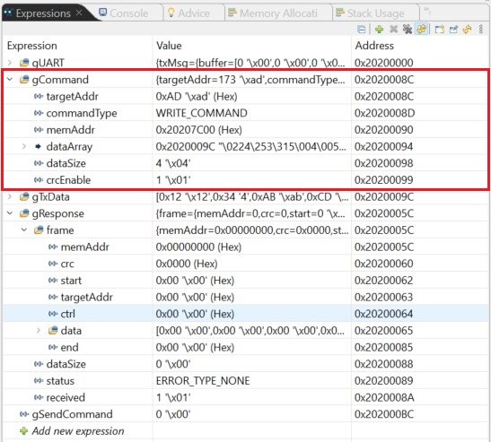

MSPM0 Communication Modules - UART User Guide¶
1. Introduction¶
MSPM0 Communication Modules - UART module provides a simple way for the application developer to integrate this UART based communication module for communication.
This module consists of both controller and target code. Target code is to integrate with application and controller code is included to show the working of target code. Target code is implemented using DMA for reducing CPU load during communication.
Controller sends a read/write command with a maximum of 32 data bytes and receives a response from target based on the status of the operation.
2. Peripheral Configurations¶
UART¶
UART |
Description |
|---|---|
Baudrate |
115200 bps |
Word length |
8 bits |
Parity |
none |
Stop bits |
one |
Word length is fixed to 8 bits. Other UART Configuration parameters (baudrate, parity, stop bits and pinMux) can be modified.
DMA Configuration¶
Two DMA Channels (DMA Channel RX and DMA Channel TX) are configured in target with UART for storing and transmitting the data to user respectively.
DMA |
Description |
|---|---|
DMA RX Trigger |
UART RX interrupt |
DMA TX Trigger |
UART TX interrupt |
DMA Channel RX gets triggered when UART is finish receiving data. Fixed to Block Addressing mode is used. Destination address gets incremented by one for every transfer. Early Channel Interrupt is enabled with the threshold of 64 transfers pending and used to indicate the CPU when it receives a command frame. Transfer size is set as 71 (can be modified by setting DMA_RX_TRANSFER_SIZE) for this example.
NOTE: The Transfer size has to be in the range (Early Channel INTR Threshold + Minimum packet size ≥ Transfer size > Early channel INTR Threshold).
DMA Channel TX gets triggered when DMA is enabled and transfer size is non-zero. Block to Fixed Addressing mode is used. Source Address gets incremented by one for every transfer. Channel Interrupt is enabled to indicate the transfer of response frame is completed.
CRC¶
CRC |
Description |
|---|---|
CRC Polynomial |
CRC-16 CCITT |
Seed |
0xFFFF |
3. Frame Format¶
Command Frame¶

Fig. 1 UART command frame¶
START: The first byte indicates the initiation of frame (0x68 by default, but can be modified by setting FRAME_START_BYTE).
TARGET_ADDRESS: In a configuration involving multiple targets, this byte is used to denote the target address (0xAD by default, but can be modified by setting TARGET_ADDR). User can disable this field by setting TARGET_ADDR_SIZE as 0. When disabled, Target address should not be sent in the frame.
CONTROL_BYTE

Fig. 2 UART control Byte¶
CMD: This bit gives information on whether this is a read operation or write operation.
Bit value 0 indicates it is a read operation.
Bit value 1 indicates it is a write operation.
CRC_EN: This bit controls whether the CRC feature is enabled or not.
Bit value 0 indicates CRC16 is not sent along the frame.
Bit value 1 indicates it is enabled and CRC16 should be sent in the frame.
DATA_LEN: This field contains actual data length for the read/write operation minus one. Data lengths from 1 to 32 are supported in this protocol.
For a write operation, Command frame’s data bytes should be equal to the value of this field plus one.
For a read operation, Response frame will have data bytes equal to the value of this field plus one.
MEMORY_ADDRESS: This field denotes the actual memory address for the read or write operation. In cases where data length exceeds 1, the operation initiates at this memory address, with subsequent bytes being written sequentially until the specified data length is reached. The address in the frame should be sent in little endian byte order. If the memory address is 0x20207C00, it should be sent in this order: {0x00} {0x7C} {0x20} {0x20}.
DATA: DATA_LEN field in the control byte should correspond with the number of bytes sent in this field for a write operation. No bytes are sent in this field for a read operation.
CRC: CRC16 is calculated for the entire packet (Start + Target Addr + Ctrl + Mem Addr + Data) and verified if CRC_EN bit in control byte is set. The 2 bytes CRC value should be sent in little endian byte order. If the CRC is 0xABCD, it should be sent in this order: {0xCD} {0xAB}.
END: The end byte indicates the end of frame (0x16 by default, can be modified by setting FRAME_END_BYTE).
Response Frame Format¶

Fig. 3 UART control Byte¶
RESPONSE CONTROL BYTE:

Fig. 4 UART control Byte¶
ERROR_BIT: This bit indicates the status of the operation.
Bit value 0 indicates no error occurred during the operation.
Bit value 1 indicates error occurred during the operation and in data section, the appropriate error code will be sent.
DATA_LEN: This field will contain the value same as what is received in the command frame for a successful operation. If any error in the operation the DATA_LEN is 1 and the error code is returned as the DATA. See below ERROR CODES for details on the error codes.
ERROR CODES:
Error Code
Description
0xE1
Incorrect Start byte
0xE2
Incorrect End byte
0xE3
Memory address out of range
0xE4
Incorrect CRC
4. Communication Configuration¶
The memory region allowed to read or write is mentioned by MEM_ADDR_RANGE_START and MEM_ADDR_RANGE_END. User can modify MEM_ADDR_RANGE_START and MEM_ADDR_RANGE_END to specify the region of memory location where read or write operation is allowed. User can also modify PREAMBLE_BYTE (0xFE by default) and PREAMBLE_BYTE_SIZE (0 by default i.e disabled) to send PREAMBLE bytes before the response frame.
5. Example¶
Example for 32-bit Write Operation:¶
Command to write 4 bytes of data (0x12,0x34,0xAB,0xCD) to Address (0x20207C00 to 0x20207C03).

Fig. 5 Example for 32bit Write¶
1. Control Byte¶

Fig. 6 Control Byte for 32bit Write¶
Set gSendCommand to 1 to send the command from controller.
 #### 2. Response

Fig. 7 Response for 32bit Write¶
0xAC in response for a write command represents the write is successful.
Fig. 8 Controller side Expressions after command¶

Fig. 9 Target side Memory Browser¶
Example for 32-bit Read Operation:¶
Command to read 4 bytes of data from Address (0x20207C00 - 0x20207C03).

Fig. 10 Example for 32bit Read¶
1. Control Byte¶

Fig. 11 Control Byte for 32bit Read¶
Set gSendCommand to 1 to send the command.

Fig. 12 Controller side Expressions¶
2. Response¶

Fig. 13 Response for 32bit Read¶
 ## 6. Acknowledge Response
## 6. Acknowledge Response
For a successful write operation, Acknowledgement(0xAC by default, can be modified by setting ACK_WRITE) is sent in the response.
For an Erroneous operation, Appropriate Error code (can be modified by setting ErrorType enum) is sent in the response.
For a proper Command frame, if the response contains Incorrect start byte or Incorrect end byte error code. Then the issue is most likely the target and controller are not synchronized. The controller needs to send the command again in such conditions.